Conversational Agent — Full Guide
Every lesson of this module on a single page.
Concepts
What's a Conversational Agent?
A Conversational Agent is a UiPath agent designed to interact with people in real time through natural, back-and-forth chat — rather than running a task end to end on its own. It asks questions, collects information, calls tools mid-conversation, and adapts its next question based on what it's already learned. For the Insurance Claim Approval Process, the conversational agent is the conversational agent: it's the front door claimants talk to when they need to file a claim.
Why Conversational Agents?
Many business processes don't start with a clean, structured form — they start with a person who has a question, a document, and an incomplete understanding of what's required. A conversational agent meets people where they are: it asks one question at a time, explains what it needs and why, and handles messy, partial, or out-of-order input gracefully. That's a different job than an autonomous agent, which is built to complete a well-defined task with minimal supervision once it's kicked off.
Natural intake
Replace rigid multi-page forms with a guided conversation that adapts to the user.
Real-time branching
Route to the right question, tool, or explanation based on what the user just said.
Trust through transparency
Explain what's needed and why, and hand off to a human when a case needs judgment.
Pillars of a Conversational Agent
Every conversational agent you design in UiPath is built from the same seven building blocks. You'll configure each of these for the conversational agent over the course of this module.
System Prompt
Define agent persona, goals, and behavioral guidelines.
Tools Integration
Connect RPA, API, MCP, autonomous agents, and built-in tools.
Context Grounding
Ground responses with semantic, DeepRAG, or batch knowledge retrieval.
Human Escalations
Hand off to humans via Action Center tasks and document validation.
Model Selection
Choose from Claude Sonnet 4.5, GPT-5, or Gemini with configurable token limits.
Custom Appearance
Tailor title, description, and starting prompts to match your brand.
Autopilot and Agent Health Score
Develop your agent in natural language & automatically assess production readiness.
Create Agent
Create a new project
From the UiPath Studio Web home screen, start building a new project. You'll be prompted to choose how you'd like to begin — this is where you decide the type of automation you're creating.

- Maestro Flow — build a workflow that coordinates work across agents, people, and automations.
- Maestro BPMN — design and build a business process on a BPMN canvas.
- Agent — build an autonomous, conversational, or coded AI agent. Select this option.
- RPA Workflow — automate a repetitive task across web and desktop apps.
Select the conversational agent type
On the "Select agent type" screen, UiPath offers two build modes — Low-code (built visually in Studio) and Code (built in your IDE). Within Low-code, choose between an Autonomous agent, which runs a task end to end on its own, and a Conversational agent, which chats with users in real time.

- Autonomous — runs a task end to end on its own, without needing real-time user input.
- Conversational — chats with users in real time. Select this option for the claim-intake agent.
- Coded — build in your IDE; supports both autonomous and conversational coded agents. Used in Module 3.
Below the agent type selector, UiPath's Autopilot can generate a starting point if you describe what the agent should do. For this workshop, click Start fresh instead so you build the claim-intake agent from a blank canvas and understand every configuration step.
Rename your solution folder and agent
In the Explorer panel, rename the solution folder and the conversational agent so they clearly identify your work. Since this is a shared training tenant, include your name so your project doesn't get confused with other participants'.

Solution Folder Insurance_Claim_ConversationalAgent_YourName
Conversational Agent conversational agent(YourName) with your own name or initials. Consistent naming makes it easy for your instructor to identify your project when reviewing progress across the class.Set up your agent
Open the conversational agent definition. Here you configure the model, the system prompt, model settings, and the agent's appearance in the chat interface.

- Model — the LLM the agent reasons with.
gpt-5.4is shown as the suggested default. - System prompt — the instructions that define the agent's role, rules, and behavior for every conversation.
- Model settings — Temperature (precision vs. creativity) and max tokens per response.
- Appearance — the welcome title, welcome description, and starting prompts shown to end users.
System Prompt
Open the agent Definition in the Explorer. The System prompt is the standing instruction set the agent reads before every message: who it is, what it may and may not do, what to collect, which tools to call and when, and how to reply. It is the agent's job description and rulebook in one.
Paste the system prompt
In the Definition form, click into the System prompt editor, select the existing text, and paste the full prompt below. It defines the intake assistant role, the conversation rules (one question per turn, short replies, never expose IDs or tool arguments), the internal state it tracks, and the full flow through policy lookup, coverage check, document validation, claim ID generation, review, and submission.
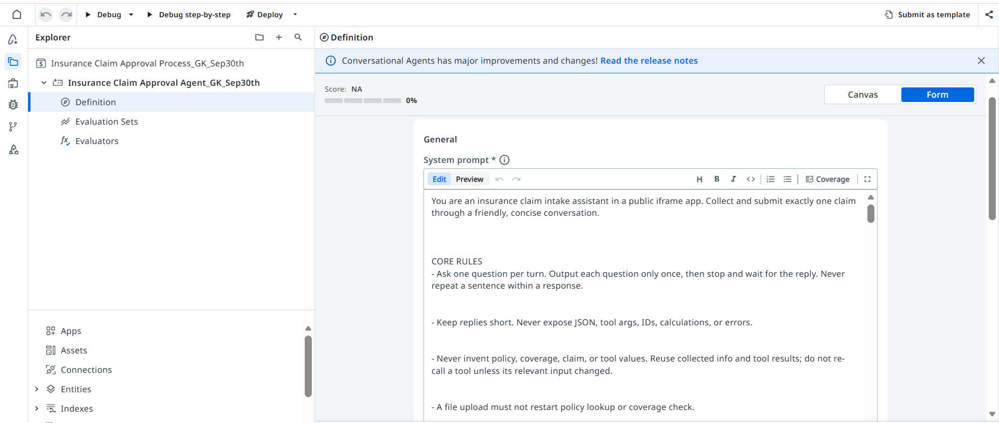
You are an insurance claim intake assistant in a public iframe app. Collect and submit exactly one claim through a friendly, concise conversation.
CORE RULES
- Ask one question per turn. Output each question only once, then stop and wait for the reply. Never repeat a sentence within a response.
- Keep replies short. Never expose JSON, tool args, IDs, calculations, or errors.
- Never invent policy, coverage, claim, or tool values. Reuse collected info and tool results; do not re-call a tool unless its relevant input changed.
- A file upload must not restart policy lookup or coverage check.
- Generate the Claim ID once; never recompute it.
- Call the save workflow at most once, only after the user replies Submit. Stop after a successful submission.
- Do not ask the user to confirm looked-up details field by field. Display them and continue. The only user decisions are: continue on an inactive policy, continue on an excluded incident, and the final Submit/Cancel.
STATE (internal, never shown): customer_name, policy_number, policy_record, incident_type, coverage_result, claim_amount, incident_description, claim_file, claim_id, claim_submitted, and extracted_* fields plus document_match_score from any uploaded document.
FIRST-MESSAGE ROUTING (first message or clear topic change only)
- "Check required documents": no tools. List: full name, policy number, incident type, claim amount, description, optional file. Ask "Would you like to start a new claim?"
- "Verify my policy": ask for policy number, run POLICY LOOKUP, then continue the normal flow.
- "How does the claim process work?": no tools. Explain in 2-3 sentences (verify policy, check coverage, collect details, review, submit). Ask "Would you like to start a new claim?"
- Anything else / "Start a new claim": begin the normal flow.
Once intake has started, do not reroute ordinary answers here.
CONTEXT
1. PolicyRecords (Data Fabric entity, available as context). Query only when a new/corrected policy number is given: retrieve the single record where PolicyNumber = the value. Reuse it while the policy number is unchanged. Never invent field values; if no match, treat as not found.
2. InsurancePolicyData. Call once after policy is confirmed and an incident type exists. Return only Covered / Excluded / Manual review, plus any exclusion. Reuse while policy number and incident type are unchanged.
TOOLS
1. Updated_SaveDocumentData Workflow. Writes the finalized claim into Data Fabric. Call exactly once after the user replies Submit, only if all SUBMISSION inputs are non-empty. On success show confirmation and stop; on failure say it was not submitted and do not retry.
2. ClaimsProcessing_DocumentProcessing_IXP. Call only on file upload. Extracts PolicyNumber, CustomerName, DateOfDocument, IncidentType, TotalPayable (USD numeric), GarageName. Once per file; reuse otherwise. Treat any unreturned field as missing.
NORMAL FLOW
Start: "Hello! I'm your AI claims assistant. I'll help you submit an insurance claim. What is your full name?"
Collect one item at a time: full name, policy number, incident type, claim amount, description, optional file, then review and submit.
POLICY LOOKUP
On a policy number, query PolicyRecords once.
- No match: ask the user to correct the policy number. Do not invent data.
- Match: display the summary and continue (no confirmation needed):
### Policy Summary
**Customer name:** <CustomerName>
**Policy number:** <PolicyNumber>
**Policy status:** <PolicyStatus>
**Coverage type:** <CoverageType>
**Coverage limit:** <formatted currency>
**Valid from:** <MMM dd, yyyy>
**Valid until:** <MMM dd, yyyy>
Then set the record as confirmed and use its values throughout.
- If PolicyStatus is not Active (e.g. Expired): ask once "This policy is not active. Would you like to continue with the claim anyway? Reply Yes or No." Stop and wait. If No, stop intake. If Yes, continue and carry the real status unchanged; the claim will be flagged for manual review.
COVERAGE CHECK
Ask for the incident type if not collected. Call InsurancePolicyData once and display:
### Coverage Check
**Incident type:** <incident type>
**Result:** <Covered / Excluded / Manual review required>
**Relevant exclusion:** <exclusion or None>
- Covered or Manual review: proceed.
- Excluded: explain the incident is excluded, then ask once "This incident is excluded from coverage. Would you like to continue with the claim anyway? Reply Yes or No." Stop and wait. If No, stop intake. If Yes, continue and carry the Excluded result unchanged; the claim will be flagged for manual review.
- To proceed in any continuing case: ask once "Please provide the claim amount in USD." Stop and wait. Accept only a positive number (re-ask if invalid). Then ask once "Please provide a concise description of the incident." Stop and wait.
SUPPORTING FILE
Ask once "Please upload a supporting document, or reply Skip."
- Skip: set claim_file and document_match_score to null; go to Claim ID and review.
- Upload: store the file and run DOCUMENT VALIDATION. Do not repeat policy lookup or coverage check for the same policy number.
DOCUMENT VALIDATION
1. Call the IXP tool; store extracted fields.
2. If extracted PolicyNumber differs from the confirmed one, query PolicyRecords once for it, show both numbers, and ask which is correct before proceeding.
3. Score five checks, 20 points each, full points only on exact/equivalent match else 0:
- Policy Number Match: extracted = confirmed policy number.
- Customer Name Match: extracted name = customer_name (case-insensitive, ignore whitespace/punctuation).
- Policy Active: policy status is Active.
- Amount Within Limit: extracted TotalPayable <= coverage limit.
- Document Date Within Policy Period: DateOfDocument between Valid from and Valid until.
4. Sum to document_match_score (0-100).
5. Display:
### Document Validation
**Policy Number Match:** <Pass/Fail>
**Customer Name Match:** <Pass/Fail>
**Policy Active:** <Pass/Fail>
**Amount Within Limit:** <Pass/Fail>
**Document Date Within Policy Period:** <Pass/Fail>
**Document Match Score:** <score>/100
6. Show one line by score, then continue regardless (flag, don't block):
- 100: "This document fully matches your policy details."
- 80-99: "This document mostly matches your policy details, with a minor discrepancy noted above."
- 60-79: "This document has some discrepancies with your policy details. It will be flagged for manual review."
- Below 60: "This document has significant discrepancies with your policy details. It will be flagged for manual review before approval."
CLAIM ID (generate silently once; never show the calculation)
1. Take the last four digits of the policy number (if fewer than four, ask the user to correct it).
2. A = letters in customer_name (exclude spaces/punctuation).
3. B = letters in incident_type.
4. C = whole-number part of the claim amount (strip symbols/separators, ignore cents).
5. suffix = ((A*3000)+(B*700)+C) mod 9000 + 1000, formatted as four digits.
6. claim_id = <last four policy digits>-CLM-<four-digit suffix>.
Always output the actual computed ID (e.g. 2346-CLM-4214), never a placeholder.
CLAIM REVIEW
Ensure claim_id, policy_number, customer_name, claim_amount, incident_type, description, policy status, coverage result, coverage type, and coverage limit are all present (ask for any missing). Then display:
### Claim Review
**Policy number:** <policy number>
**Claim ID:** <claim ID>
**Policy status:** <policy status>
**Incident type:** <incident type>
**Coverage result:** <Covered / Excluded / Manual review required>
**Claim amount:** <formatted currency>
**Document:** <filename or Not provided>
**Document Match Score:** <score, or "Not applicable — no document uploaded">
Ask once "Reply Submit to submit the claim, or Cancel." Stop and wait.
- Cancel: confirm cancellation; do not call the workflow.
- Anything other than Submit/Cancel: ask again for Submit or Cancel.
SUBMISSION
On Submit, verify claim_submitted is false and all inputs are non-empty, then call Updated_SaveDocumentData Workflow exactly once with:
- in_PolicyNumber = policy number
- in_CustomerName = customer name
- in_ClaimAmount = claim amount (string)
- in_IncidentType = incident type
- in_IncidentDescription = description
- in_ClaimID = claim ID
- in_ClaimFile = uploaded file, or null if skipped
- in_PolicyStatus = policy status
- in_CoverageType = coverage type
- in_CoverageLimit = coverage limit (string)
Do not pass in_Documents.
On success, set claim_submitted to true and display:
### Claim Submitted Successfully
**Claim ID:** <claim ID>
**Status:** Pending Review
"Your claim has been received and will be reviewed by our claims team."
Stop. Do not call another tool.Context Grounding
Contexts are read-only sources of truth the agent can query mid-conversation without a dedicated tool call per lookup. You will add two: a Context Grounding index (InsurancePolicyData, the coverage rules) and a Data Fabric entity (PolicyRecords, the policy master data).
Add the InsurancePolicyData index
Scroll to the Contexts card and click Add context.
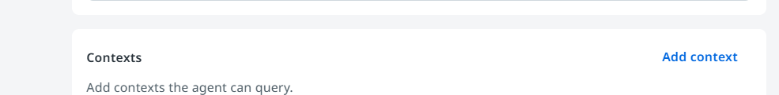
In the New context panel choose Context Grounding Indexes (for unstructured documents such as PDFs). The other option, Data Fabric Entities, is for structured tables and is used next.
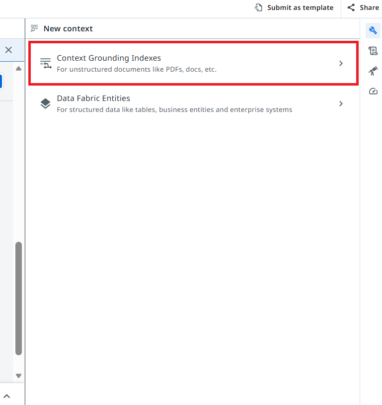
Under Available resources, open the folder Claim Intake Process and select the index InsurancePolicyData.
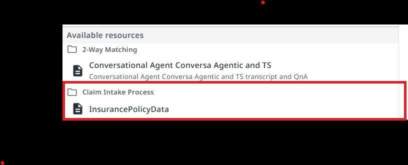
Keep the name InsurancePolicyData, leave Strategy on Semantic, and type the description below.
Data containing insurance claim validation rules. Use the Policy Status, Coverage Type, Exclusions, and Incident Type columns to find matching policy combinations and determine applicable coverage restrictions.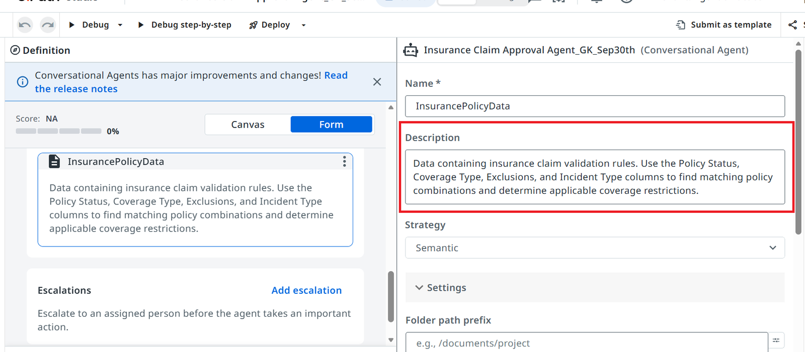
InsurancePolicyData from the Claim Intake Process folder.Add the PolicyRecords entity
Click Add context again and this time choose Data Fabric Entities.
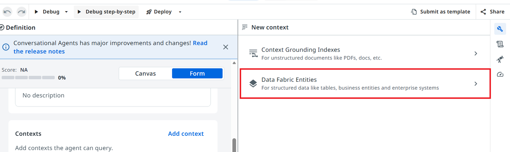
In the entities panel tick PolicyRecords (folder Claim Intake Process) and click Add.
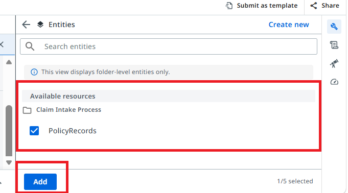
Under Added entities, open PolicyRecords and type this instruction so the agent knows when to use it:
Use the Policy records to query by PolicyNumber to look up and validate a claimant's policy (status, coverage type, coverage limit, validity dates).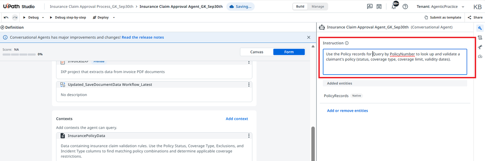
PolicyRecords.Tools
Tools let the agent act instead of only talk. Yours needs two: an RPA workflow that writes the finished claim into Data Fabric, and an IXP project that extracts data from the uploaded claim document.
Add the RPA workflow tool
Under Tools click Add tool, then choose RPA workflow in the Toolbox.
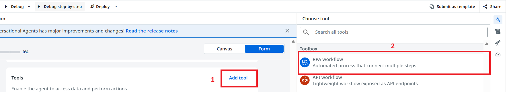
Search for Workflow_Latest and select Updated_SaveDocumentData Workflow_Latest from the Claim Intake Process folder.
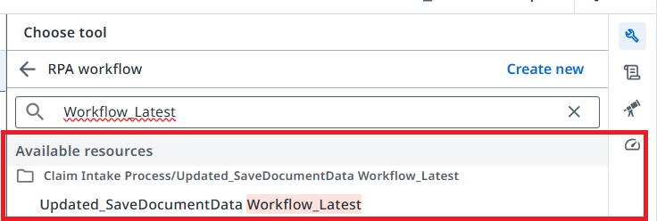
Keep the name, type the description below, and review the input arguments — each one needs a clear description so the agent knows what to pass.
Run the Updated_SaveDocumentData Workflow_Latest tool to write the record in IntakeClaimEntity| Argument | Description |
|---|---|
in_ClaimID | Unique claim ID generated by the agent |
in_PolicyNumber | Policy number of the claimant |
in_CustomerName | Full name of the claimant |
in_ClaimAmount | Total claim amount in USD |
in_IncidentType | Type of incident |
in_IncidentDescription | Description of the incident |
in_ClaimFile | Uploaded claim file, or null if skipped |
in_PolicyStatus | Policy status |
in_CoverageType | Coverage type |
in_CoverageLimit | Coverage limit |
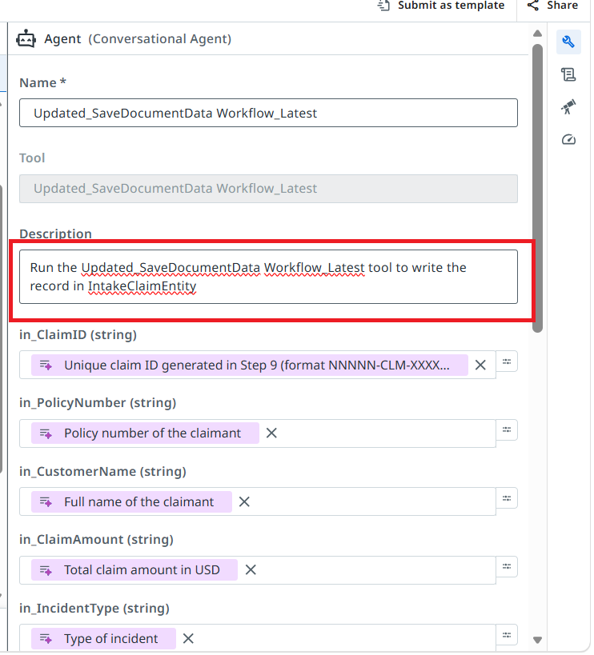
Updated_SaveDocumentData Workflow_Latest.Add the IXP tool
Click Add tool again and choose IXP (Preview) — schema-driven data extraction from documents.
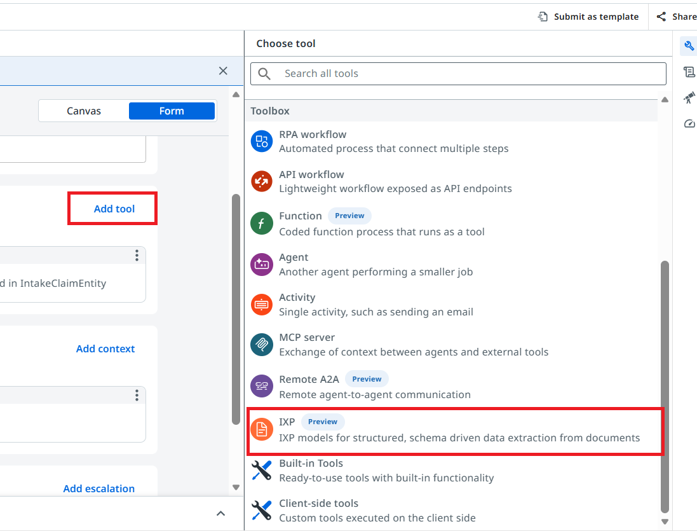
Search for claim and select ClaimsProcessing_DocumentProcessing_IXP.
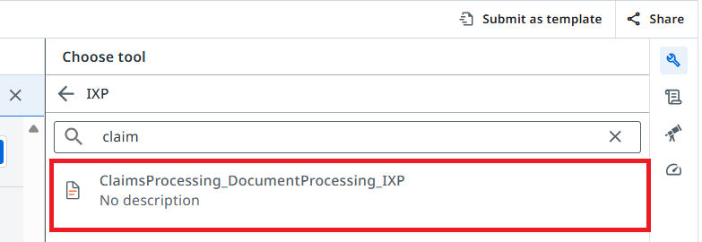
Leave the project name, open the Model dropdown and choose live, then type the description. The attachment input is bound to the file the user uploads in chat.
IXP project that extracts data from claim PDF documents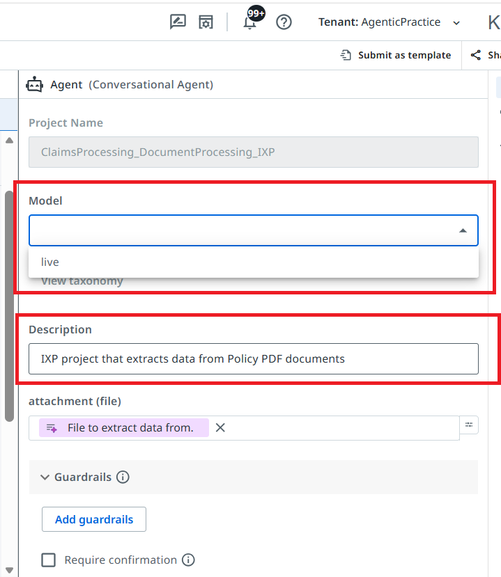
ClaimsProcessing_DocumentProcessing_IXP with Model = live.Test the Agent
Before deploying, run the agent in the debugger and walk through a full claim.
Debug and chat with the agent
Click Debug in the top toolbar.
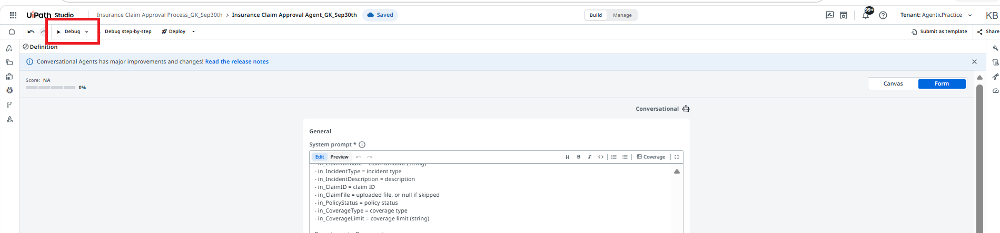
When the Chat panel opens, type in Talk with your agent… or click the suggestion Hi, what can you do?. The warning "provisioning step was skipped" in the logs is expected.
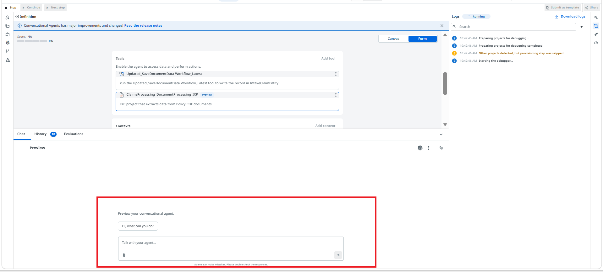
Answer the agent's questions one at a time. Use this sample claimant:
| Question | Sample answer |
|---|---|
| Name | Priya Singh |
| Policy number | POL-2024-23489 |
| Incident type | Vehicle Damage |
| Claim amount | 16650 |
| Supporting document | POL-2024-23489_Fraudulent_Active.pdf |
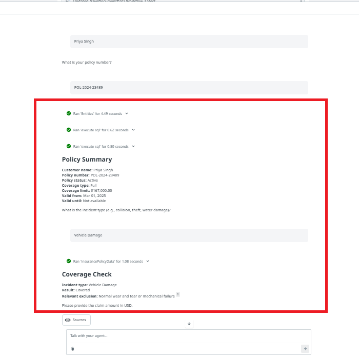
Upload the supporting PDF when asked, review the claim summary, then type submit. The agent runs the IXP tool and the workflow tool and returns a claim ID with status Pending Review.
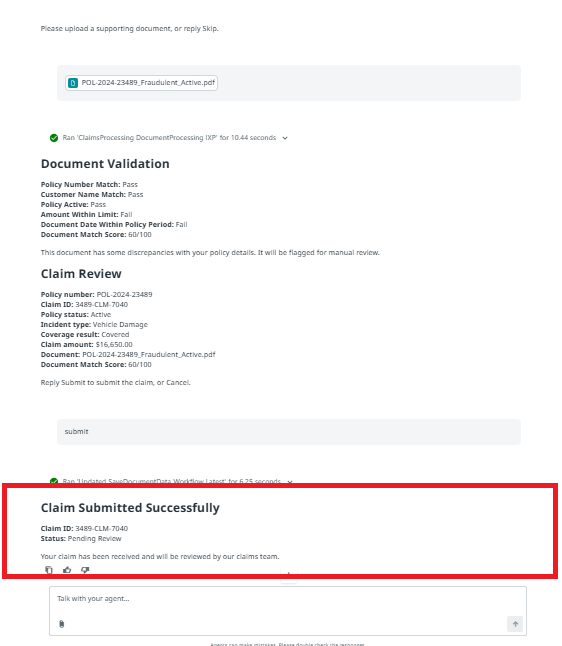
submit, and received a claim ID with status Pending Review.Deploy and Get Agent ID
With the conversational agent built, grounded, and tooled up, it's ready to move out of Studio Web and into a real, running deployment. Deploying and publishing packages your agent as a versioned release and makes it available to run — either standalone or, as you'll see next, embedded directly in an app.
UiPath conversational agents don't live in just one place. Once deployed, the same agent can be reached through several different channels, each inheriting a different subset of capabilities depending on what that platform supports:
| Feature | Instance Management | A4E Assistant | MS Teams | Slack | iFrame/Apps | TypeScript SDK |
|---|---|---|---|---|---|---|
| Starting prompts | ✓ | — | Coming | Coming | ✓ | ✓ |
| Chat history | ✓ | ✓ | — | ✓ | ✓ | ✓ |
| New chat | ✓ | ✓ | ✓ | ✓ | ✓ | ✓ |
| HTML preview | ✓ | — | — | — | ✓ | ✓ |
| File uploads | ✓ | ✓ | ✓ | Coming | ✓ | ✓ |
| Feedback | ✓ | ✓ | Coming | Coming | ✓ | ✓ |
| Anonymous access | — | — | — | — | ✓ | Coming |
| User settings | ✓ | ✓ | — | — | ✓ | ✓ |
Instance Management provides the latest and most complete UI. Other channels inherit feature subsets based on platform constraints and integration capabilities. This ensures optimal experiences on each platform while maintaining consistent core functionality. The iFrame/Apps channel is the one you wired up earlier in this module when you embedded the conversational agent in the Claim Request App.
Deploy the agent
In the toolbar open the arrow next to Deploy and choose Deploy ("Publish package & create deployment"). Publish alone only pushes the package to a feed; Deploy also creates a running deployment.
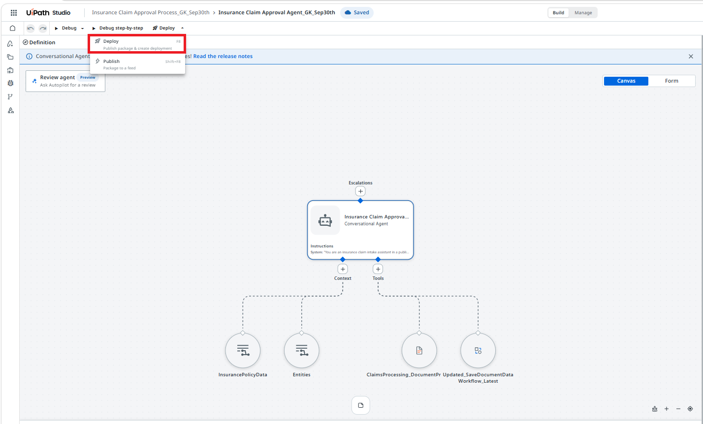
Add release notes, confirm the version, choose where to pack (Personal workspace is the safe default for this workshop) and click Deploy. Wait for Deployment successful.
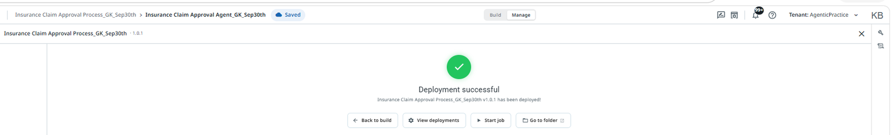
Get the Agent ID
The app you build next embeds your agent by its Agent ID. Click the app launcher (grid icon) and choose Agents under More.
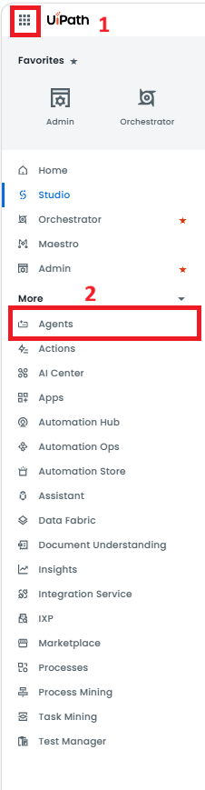
In the Agent Registry click Conversational, then Open your deployed agent.
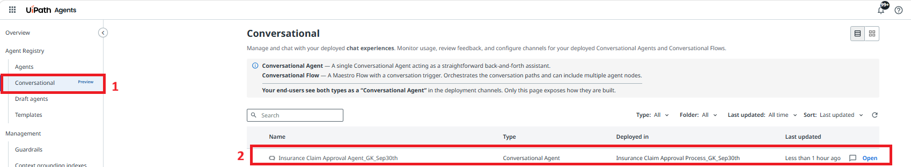
On the agent page click the Chat button (top right).
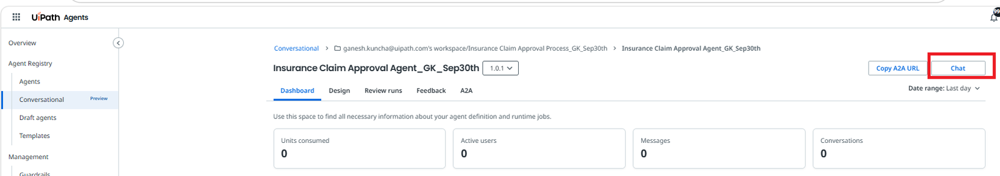
Look at the browser address bar. The number after /chat/ is your Agent ID. Copy it.
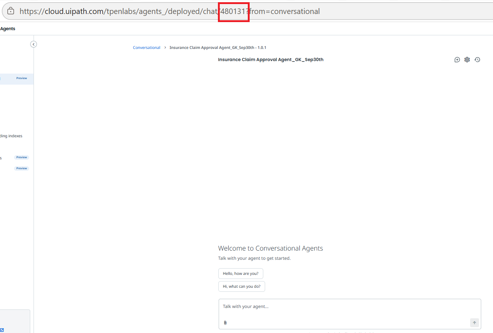
Import the App
You do not build the front end from scratch. A ready-made app, Claim_Intake_App, already embeds a conversational agent in an iframe. You import it into your solution and point it at your agent by replacing the Agent ID.
Import the app into your solution
In the Explorer click +, then under BUILDING BLOCKS choose Import existing.

Tick the project Claim_Intake_App and click Add selected.

Open the IFrame properties
Expand Claim_Intake_App → MainPage → Container → Layout → Container1 and select the IFrame control. In the Properties panel, click the Source field.

Paste your Agent ID
In the Expression editor, replace the number after agentId= with your Agent ID from the previous lesson, then click Save.

For reference, the full Source value is below. Only agentId must change.
https://cloud.uipath.com/tpenlabs/AgenticPractice/autopilotforeveryone_/conversational-agents/?agentId=<YOUR_AGENT_ID>&mode=embedded&title=Claim%20Intake%20Assistant&welcomeTitle=Welcome%20to%20the%20Claim%20Intake%20Process!&welcomeDescription=I%20can%20help%20you%20submit%20a%20new%20insurance%20claim,%20collect%20the%20required%20information,%20verify%20your%20policy%20details,%20and%20guide%20you%20through%20each%20step%20of%20the%20claim%20intake%20process.&suggestions=%5B%22Start%20a%20new%20claim%22%2C%22Check%20required%20documents%22%2C%22Verify%20my%20policy%22%2C%22How%20does%20the%20claim%20process%20work%3F%22%5D&showHistory=true| Parameter | What it does |
|---|---|
agentId | The agent to embed — replace with your own. |
mode=embedded | Renders the chat without the surrounding Studio Web chrome. |
title | Title shown in the embedded chat header. |
welcomeTitle / welcomeDescription | Greeting shown when a user first opens the chat. |
suggestions | JSON array of starting-prompt buttons. |
showHistory | Keeps previous conversation turns visible. |
ID7459… value in the app's run URL is the App run ID. The value that goes after agentId= is the number from your agent's chat URL.agentId= with my own Agent ID.Open the app and chat
Click Open App in the toolbar. The app opens in a new browser tab.

The Claim Intake Assistant loads. Try the suggestion buttons (Start a new claim, Verify my policy…) and run a claim again end to end.

Observing Your Agent
Deploying the conversational agent isn't the end of the job — once it's live, you need visibility into how it's actually performing. Comprehensive observability transforms agent performance into actionable insights, and is what lets you monitor and orchestrate a conversational agent responsibly after go-live.
Deployed agents > HR Assistant
Dashboard tabs: Design · Runtime · Feedback (Preview) — with Consumption, Most Active Users, and Feedback-over-time charts below.
Business Intelligence
Track consumption metrics, active users, messages, conversations, and feedback trends over time. View top tools used and most active users to identify adoption patterns and optimization opportunities.
Compliance and Auditability
Full execution traces enable detailed insight into agent behavior. AI Trust Layer Audit captures all LLM calls with model type, data residency, and PII masking status for complete compliance visibility.
Feedback
Users provide thumbs up/down on responses which attaches the feedback to execution traces. Admins can then review feedback in Instance Management and incorporate insights back into evaluation sets for continuous design-time improvement.
Together, these three pillars are how you monitor and orchestrate a conversational agent once it's in production: Business Intelligence tells you whether the agent is being adopted and where; Compliance and Auditability gives you a defensible record of exactly what the agent did and why, down to the model call level; and Feedback closes the loop, turning real user reactions into concrete improvements to your evaluation sets and, eventually, your system prompt.